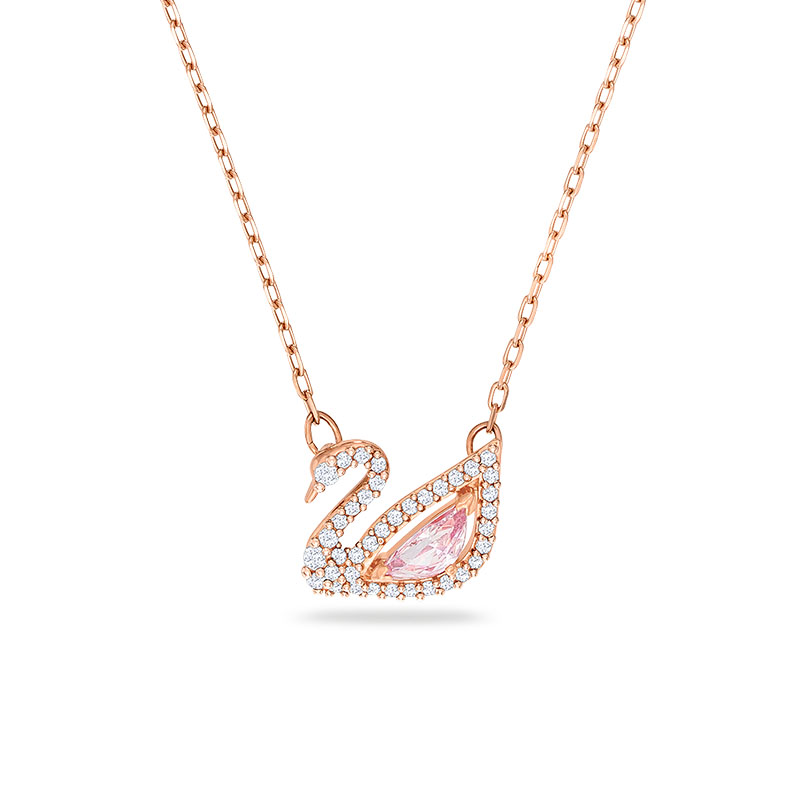
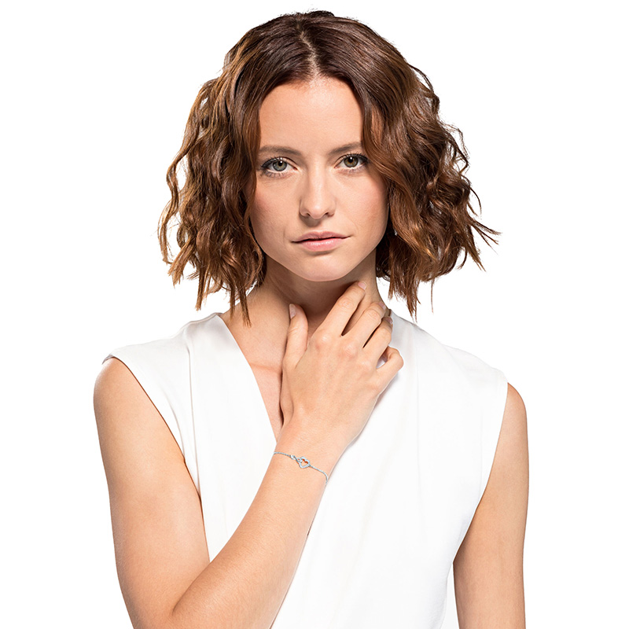

Pha lê Swarovski từ lâu đã vượt ra khỏi ranh giới của một món phụ kiện thông thường để trở thành biểu tượng của sự xa hoa và tinh tế. Không giống như kim cương mang vẻ đẹp sắc lạnh và xa vời, Swarovski mang đến một sự lấp lánh rực rỡ, dễ tiếp cận nhưng vẫn giữ trọn vẹn đẳng cấp của giới thượng lưu.
Mùa lễ hội năm nay, xu hướng Quiet Luxury (Sang trọng thầm lặng) tiếp tục lên ngôi. Phái đẹp không còn ưa chuộng những thiết kế quá cồng kềnh hay phô trương. Thay vào đó, một sợi dây chuyền thanh mảnh với mặt đá giọt nước, hay một chiếc vòng tay tennis đính đá chạy viền đang là "chìa khóa" để thu hút mọi ánh nhìn trong các đêm tiệc.
Nghệ thuật phối dây chuyền (Layering)
Một trong những cách đeo trang sức Swarovski sành điệu nhất hiện nay là phong cách Layering. Bí quyết nằm ở việc kết hợp những sợi dây chuyền có độ dài và kiểu dáng mặt đá khác nhau.

Hãy bắt đầu với một chiếc choker đính đá sát cổ, tiếp nối bằng một sợi dây chuyền mảnh dài ngang xương quai xanh với mặt đá chủ đạo. Cuối cùng, một sợi dây chuyền dài hình chữ Y sẽ tạo hiệu ứng kéo dài phần cổ, giúp vóc dáng trông thanh thoát và quyến rũ hơn rất nhiều.
"Trang sức không dùng để che giấu khuyết điểm, mà là để tôn vinh những đường nét kiêu hãnh nhất của người phụ nữ."
Vòng tay: Điểm nhấn tinh tế nơi cổ tay
Nếu dây chuyền thu hút ánh nhìn đầu tiên, thì vòng tay lại là chi tiết thể hiện sự tinh tế qua từng cử chỉ của bạn. Khi chọn vòng tay Swarovski, nguyên tắc quan trọng nhất là "Less is More". Nếu bạn đã chọn một chiếc đồng hồ kim loại bản lớn, hãy tiết chế bằng cách chỉ phối thêm một chiếc vòng tay tennis đính đá siêu mảnh.

Ngược lại, nếu cổ tay bạn đang để trống, đừng ngần ngại diện một chiếc Bangle (vòng cứng) bản to đính pha lê rực rỡ. Phối cùng một chiếc đầm lụa trơn màu đen hoặc đỏ rượu vang, bạn chắc chắn sẽ là tâm điểm của mọi bữa tiệc.
Hãy để VIORA đồng hành cùng bạn trong việc định hình phong cách cá nhân, biến mỗi ngày bình thường thành một khoảnh khắc tỏa sáng.